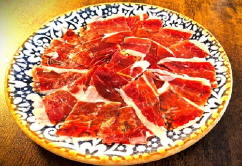
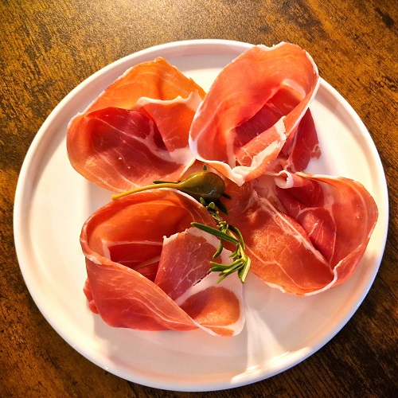
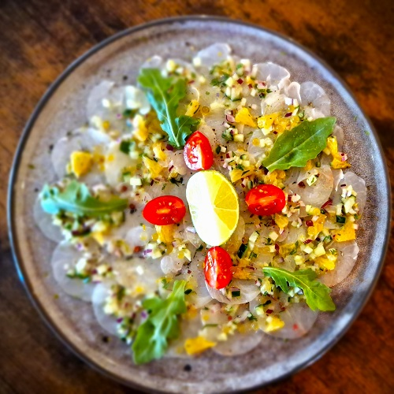
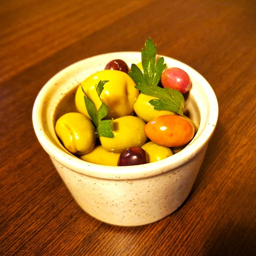
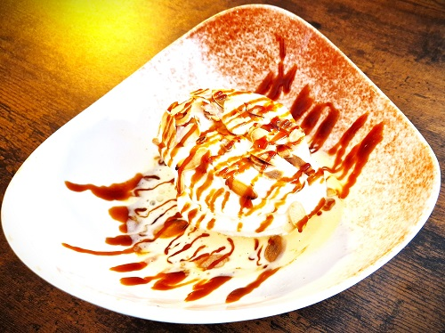

Produits frais et de saison, pâtes et desserts maison, pizza à la pâte finement levée. La carte change au fil des semaines — voici un aperçu.
Antipasti & à partager
I
Olives marinées maison
Sélection méditerranéenne, herbes fraîches
Prosciutto crudo
Jambon cru finement tranché
Planche d'antipastià partager
Charcuteries, fromages & légumes
Artichauts & romarin
Confits, ricotta, huile d'olive
Carpaccio de daurade★
Crudo, agrumes, roquette
Burrata di Puglia
Tomates de saison, basilic

Planche à partager
Le Pizze
II
Margherita D.O.P.★
Pâte finement levée, tomate San Marzano, mozzarella, basilic
Diavola
Salame piccante, mozzarella
Verdure di stagione
Légumes grillés de saison, pesto
Bianca al tartufo
Crème, champignons, huile de truffe

Prosciutto crudo
Paste fresche
III
Orecchiette salsiccia & broccoli★
Saucisse italienne, brocolis, pecorino
Pâte fraîche de la semaine
Suggestion du chef, rotation hebdomadaire
Tagliatelle al ragù
Ragù mijoté, parmesan
Risotto aux crevettes★
Crevettes, portion généreuse

Carpaccio de daurade
Pesce & Carne
IV
Poisson du jour
Selon la pêche, légumes de saison
Filet de bœuf
Sauce au choix, garniture maison
Escalope milanaise
Panée, roquette, tomates cerises

Olives marinées maison
Dolci & Formaggi
V
Dessert maison du jour★
Préparé sur place, sauce caramel
Tiramisù
Recette de la maison
Plateau de fromages
Affinés, sélection du moment
Café gourmand
Café de qualité & mignardises

Dessert maison
Plats et prix donnés à titre indicatif — la carte évolue chaque semaine. Tous les plats et tarifs sont à confirmer avec l'établissement. ★ = spécialités souvent citées.
✦
Boire
Au verre & à la pression
De lasourceau verre
Une bière luxembourgeoise à la pression, notre propre crémant, des vins qui tournent chaque semaine et des cocktails classiques.
Pression
Clausel
Bière de la Lëtzebuerger Stad Brauerei, servie fraîche.
Bulles maison
Sélection Bivius
Crémant du Luxembourg, en collaboration avec le Domaine Mathes.
Au verre
Vins de la semaine
Carte de vins choisie, sélection au verre renouvelée chaque semaine.
Notre boutique de vins sur place prolonge la table : retrouvez les bouteilles goûtées au restaurant, dont notre crémant « Sélection Bivius » né d'une collaboration avec le Domaine Mathes.
Conseils au comptoir, sélection renouvelée, et vente également en ligne via la plateforme Letzshop.
Crémant Sélection BiviusDomaine MathesVente sur LetzshopConseil personnalisé
Vingt-et-une chambres pour le voyageur d'affaires comme pour le week-end : accès facile à la route d'Arlon, parking privé, et le confort d'une maison familiale.
Petit-déjeuner sur place, terrasse d'été, salon privé pour réunions et présentations, et notre restaurant au rez-de-chaussée.